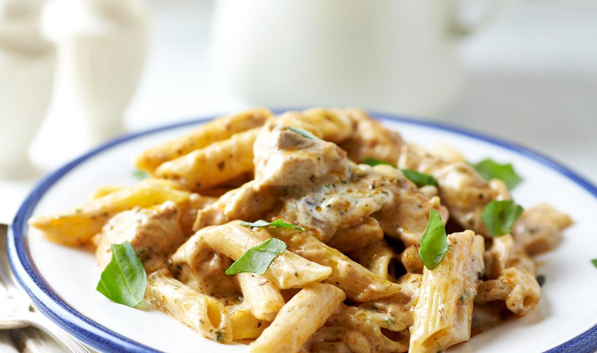

Minu Lemmikroog- Kanapasta
| koostisosad |
Kogus |
| kana |
500g |
| pasta |
400g |
| vahukoor |
0,2l |
| kreemjuust |
1sl |
| Puljongi maitseaine |
1sl |
valmistamine
Tükelda kana ning küpseta pannil 5min
Keeda pasta 7-10min
sega pannil kokku ning lisa vahukoor,kreemjuust ning puljongi maitseaine
